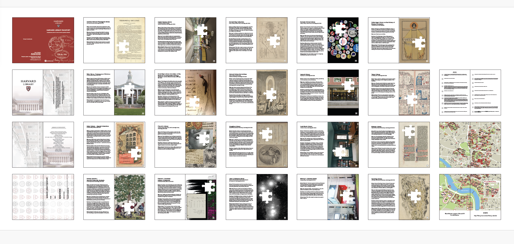
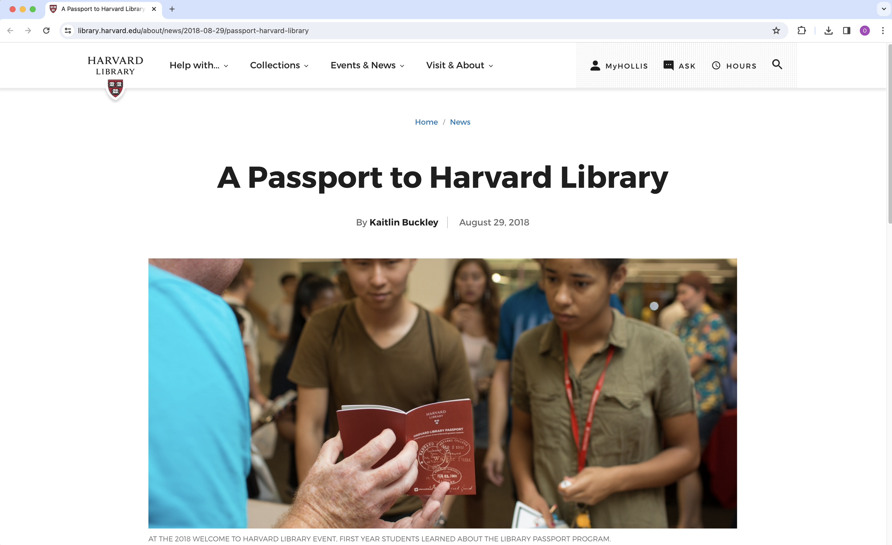
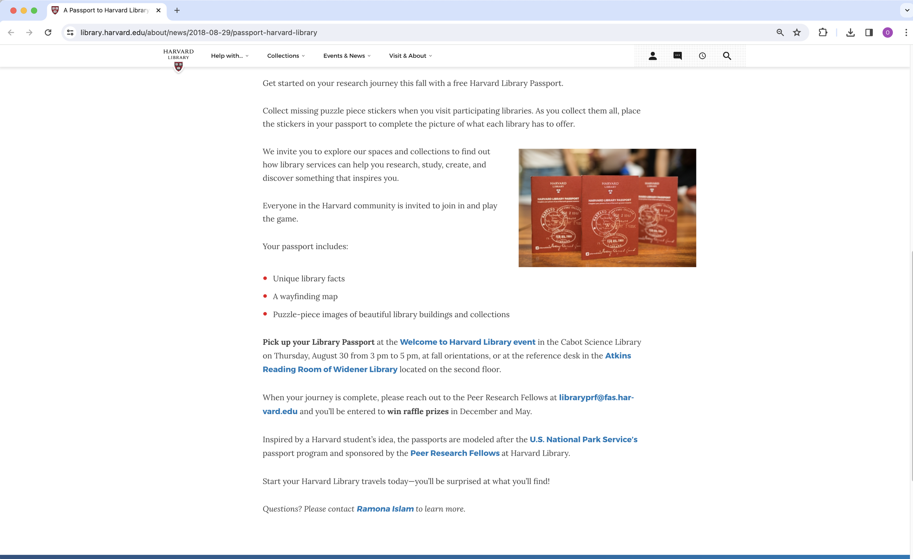
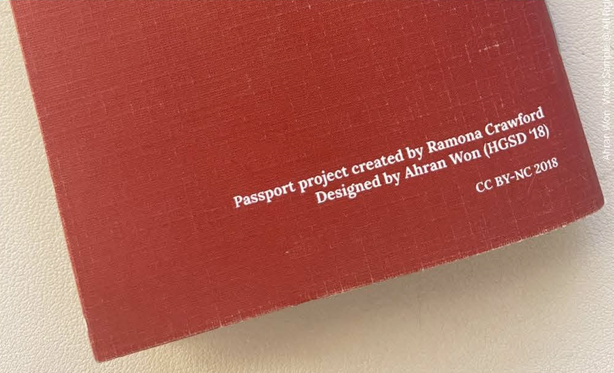
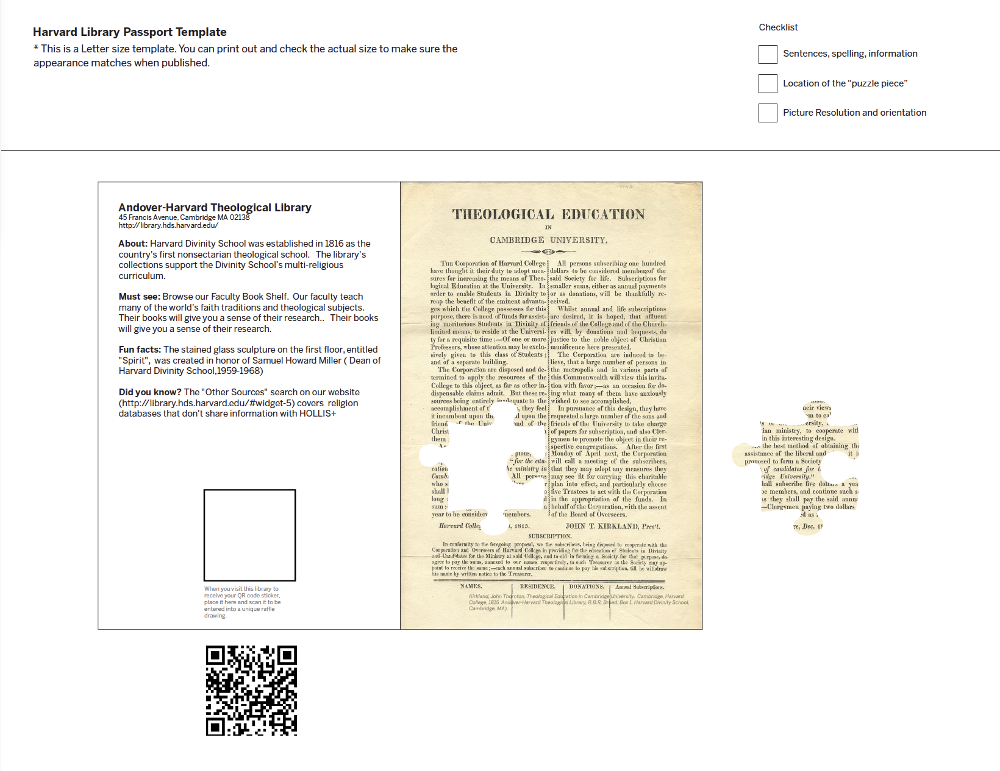
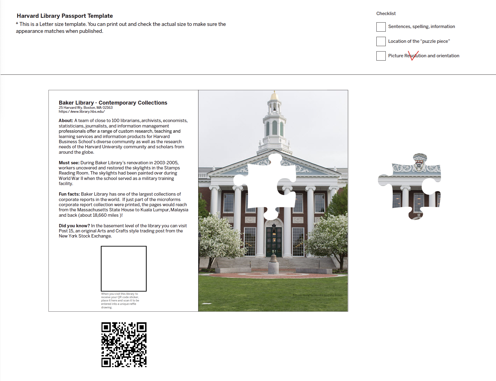
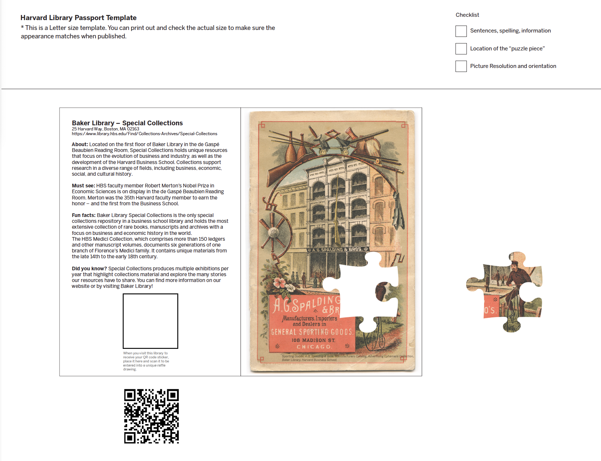

Passport to the Harvard Libraries
Turning a library system into somewhere to travel.도서관을 찾아볼 곳으로 바꾸기.




- Client
- Harvard University
- Location
- Cambridge, Massachusetts
- Year
- 2017
- Role
- Designer
- Scope
- Identity and print design
A passport that encourages students to visit libraries across the university.
학교 곳곳의 도서관을 찾아가게 만드는 여권.




Somewhere to travel, not somewhere to look things up.찾아볼 곳, 찾아보는 곳이 아니라.